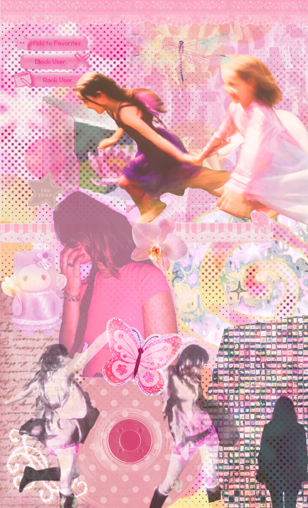

Het internet kan je leven groter maken, maar ook je hele leven opslokken. Het is net zoals met alle leuke dingen in het leven: als je er te veel van hebt, is het niet meer leuk. Mijn missie voor mensen die het internet gebruiken is daarom vooral: balans.
Mijn telefoon is, waarschijnlijk net zoals bij veel anderen, het eerste ding dat ik oppak in de ochtend.
Ik kan gelijk met mijn vrienden praten, muziek luisteren, dingen opzoeken, inspiratie vinden en zien wat mijn plan is voor de dag. Bijna iedereen van mijn leeftijd draagt het internet de hele dag met zich mee.
En het is ook geweldig. Het is bijna niet meer te bedenken hoe we het zouden doen zonder internet. Ik kan overal en altijd een foto maken, mijn vrienden een meme sturen, gamen, een serie kijken, eindeloos reels scrollen en zelfs een boek lezen op mijn iPhone. Verveling is iets wat ik bijna nooit meer hoef te voelen. Behalve als mijn 4G op is.
Maar er zit ook een keerzijde aan. Hoe vaak kijk je nou echt naar al die video's die je hebt gemaakt bij een concert? Heb je ze voor jezelf gemaakt? Of ben je vooral bezig met hoe ze er later uitzien op je Instagram Story, waardoor je niet echt aanwezig bent bij het concert waar je al een jaar naar hebt uitgekeken?
Je zit bij een gezellig familiediner, maar ziet dat al je vrienden uit zijn zonder jou. FOMO slaat gelijk toe. Doei, leuke avond met je familie.
Vroeger kreeg ik mijn beeld van mezelf vanuit de camera van mijn oma. Vanuit de fotoboeken kreeg ik een beeld van mezelf. Ik had niemand om mezelf mee te vergelijken, behalve de mensen om mij heen. Niemand kon onder mijn foto's reageren en niemand zag ze, tenzij ik het fotoboek erbij pakte.
Tegenwoordig kan je alles en iedereen vinden op het internet. Je ziet elke dag mensen die knapper lijken dan jij, meer vrienden lijken te hebben en meer geld lijken te hebben.
Op de basisschool had je misschien dat ene rijke kind met een zwembad waar je jaloers op was. Maar dat kind zag je ook op slechte dagen. Op social media zie je vooral de leukste dingen, mooiste foto's en grootste overwinningen.
Ik kan wel zeggen dat dat heel erg is, maar ik doe dat zelf ook. Als ik een nieuw iemand ontmoet, volg ik die persoon meestal binnen een paar dagen op Instagram. Ik zie hun vakanties, vrienden en leuke kanten. Daardoor denk je snel: “Zoooo, die is cool!” Terwijl ik eigenlijk helemaal niet weet hoe die persoon zijn leven echt is. Ondertussen weet ik dat ik, net zoals veel van mijn vrienden, even mijn eigen profiel analyseer wanneer een nieuw iemand je volgt.
Niet altijd, maar soms wil je even in iemand anders hoofd kruipen en bedenken hoe diegene jou ziet. Het is een vertekend beeld van jezelf, een positief beeld, maar niet hoe je echt bent.
Maar ik denk dat teveel bezig zijn met hoe je anderen jou zien, je eigen beeld van jezelf kan vervormen.
Toch ben ik niet tegen het internet. Online kan je juist mensen vinden die dezelfde interesses hebben als jij. Het kan je verbinden, inspireren en een plek geven waar je bij hoort. Daarom is mijn missie niet: minder internet. Mijn missie is balans. Ik wil een internet dat ons verbindt zonder ons constant te laten vergelijken. Een internet dat iets toevoegt aan ons leven, in plaats van het over te nemen. Want uiteindelijk wil ik niet alleen een mooi leven op mijn scherm. Ik wil ook een mooi leven als mijn scherm uitstaat.